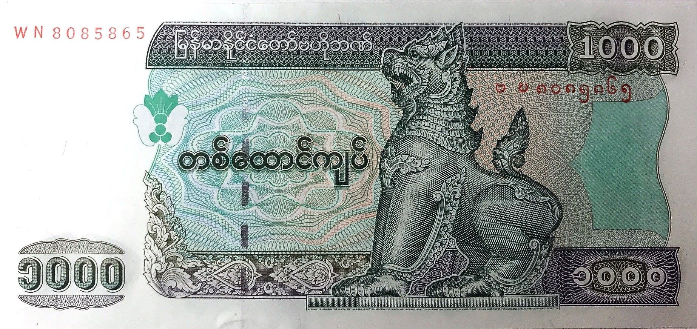
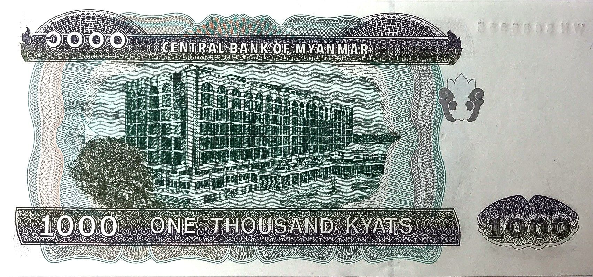

🧐 What are the signs of a counterfeit 1,000 Kyat note? The counterfeit 1,000 Kyat note can be identified by several distinguishing features that differ from the genuine note. Here's a guide to help you spot the differences: • Color difference: The counterfeit note tends to have a more faded or uneven tone, lacking the vibrant color seen in genuine notes. • Cut marks: The counterfeit note often has noticeable cut marks along the edges or corners. (The genuine note does not have these.) • Watermark: The watermark, which typically features a prominent image of a lion in the top left corner of the genuine note, is missing in the counterfeit. • Security thread: The genuine note contains a security thread with the denomination and the text "MYANMAR" visible. In the counterfeit, this text and security feature may be absent or poorly printed. • Hidden features: When held up to light, the genuine note reveals a hidden "1000" watermark embedded into the paper. This feature is typically absent or poorly replicated in counterfeit notes. • Texture and feel: The genuine 1,000 Kyat note has a distinct texture, with raised printing and a slightly rough feel. The counterfeit note might feel smooth or flimsy. By looking out for these features, you can better protect yourself from counterfeit currency.
 